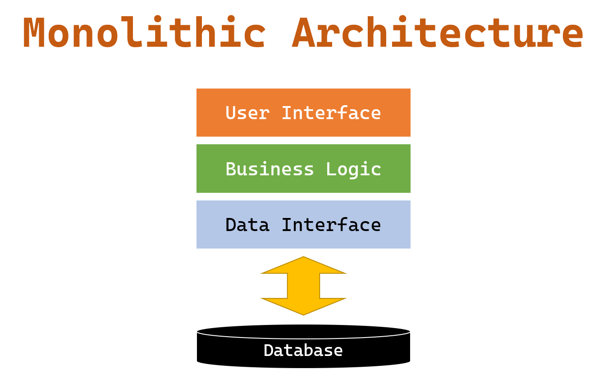
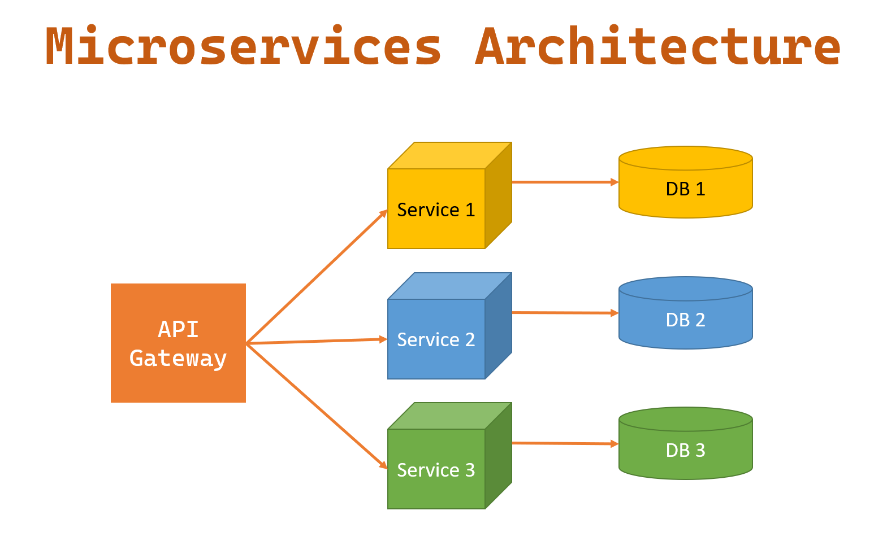
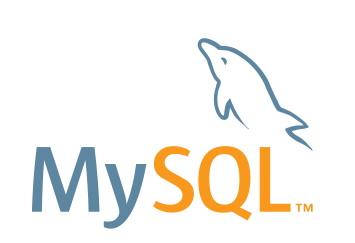

How to Learn Backend Development
Table of Contents
This tutorial will introduce how to learn backend development. (Python, Java, Ruby, C#, PHP, Monolithic architecture, Microservices architecture, Serverless architecture, MySQL, PostgreSQL, MongoDB, AWS, Azure, Google Cloud, Security, Performance)

To learn web backend development, you can follow these steps:
Languages
Familiarize yourself with the basics of server-side programming: Web backend development involves creating code that runs on a server, rather than in a client’s web browser. There are many programming languages that can be used for server-side programming, including Python, Java, and Ruby.
There are many programming languages that can be used for backend web development, including:
-
Python: Python is a popular, high-level programming language that is known for its simplicity and readability. It has a large standard library and a large and active community of users and developers. Python is often used for backend development, as well as for tasks like data analysis, machine learning, and scientific computing.
-
Java: Java is a popular, object-oriented programming language that is known for its portability and scalability. It has a large standard library and a large and active community of users and developers. Java is often used for backend development, as well as for tasks like building Android apps and enterprise applications.
-
Ruby: Ruby is a dynamic, object-oriented programming language that is known for its simplicity and expressiveness. It has a large standard library and a large and active community of users and developers. Ruby is often used for backend development, as well as for tasks like web scraping and scripting.
-
C#: C# is a popular, object-oriented programming language that is developed and maintained by Microsoft. It is often used for backend development, as well as for building Windows applications and games.
-
PHP: PHP is a popular, server-side scripting language that is often used for web development. It has a large standard library and a large and active community of users and developers.
Ultimately, the best language for backend development will depend on your specific needs and preferences, as well as the requirements of the project you are working on. It is often helpful to learn multiple languages and technologies to broaden your skills and be able to choose the best tool for the job.
Architectures
Learn about web application architectures: Web applications typically have a frontend (the client-side code that runs in the user’s web browser) and a backend (the server-side code that runs on the server). It is important to understand how the frontend and backend of a web application interact and how data is exchanged between them.
There are many architectures that can be used for backend development, including:
- Monolithic architecture: In a monolithic architecture, all of the components of a web application are built and deployed together as a single unit. This can make it easier to develop and maintain the application, but it can also make it more difficult to scale and update individual components.

- Microservices architecture: In a microservices architecture, a web application is broken down into small, independent services that can be developed and deployed separately. This can make it easier to scale and update individual components, but it can also make it more complex to manage the overall application.

- Serverless architecture: In a serverless architecture, web applications are built and deployed as small, independent functions that are triggered by events. The functions are executed on demand and are scaled automatically, and the infrastructure is managed by a cloud provider. This can make it easier to scale and manage the application, but it can also be more complex to develop and debug.
Ultimately, the best architecture for a web application will depend on the specific needs and requirements of the project. It is often helpful to consider the trade-offs between different architectures and choose the one that best fits the needs of the application.
Databases
Learn about database systems: Many web applications store data in a database, and it is important to understand how to design and interact with databases. Popular database systems include MySQL, PostgreSQL, and MongoDB.
MySQL
MySQL is a popular, open-source relational database management system (RDBMS). It is used to store, organize, and retrieve data for a wide range of applications, and it is particularly well-suited for web applications.

Some of the key features of MySQL include:
-
Tables: MySQL stores data in tables, which are organized into rows and columns. Tables can be related to each other using keys and foreign keys, which allows data from multiple tables to be combined and queried.
-
Structured Query Language (SQL): MySQL uses SQL to create, modify, and query tables and data. SQL is a standardized language for interacting with databases, and it is used by many different database systems.
-
Indexes: MySQL allows developers to create indexes on tables to improve the performance of queries. Indexes are data structures that allow the database to quickly locate and retrieve specific rows of data.
-
Replication: MySQL supports replication, which allows data from one server to be replicated to other servers. This can be used to improve the performance and reliability of applications by distributing the load across multiple servers.
-
Scalability: MySQL is designed to scale to support large amounts of data and high levels of concurrency. It can be used in a wide range of environments, from small websites to large, high-traffic applications.
MySQL has a large and active community of users and developers, and it is widely used in the development of web and mobile applications. It is constantly being updated and improved, with new features and best practices emerging all the time.
PostgreSQL
PostgreSQL is a powerful, open-source, object-relational database management system (ORDBMS). It is used to store, organize, and retrieve data for a wide range of applications, and it is known for its reliability, flexibility, and performance.
Some of the key features of PostgreSQL include:
-
Tables: PostgreSQL stores data in tables, which are organized into rows and columns. Tables can be related to each other using keys and foreign keys, which allows data from multiple tables to be combined and queried.
-
Structured Query Language (SQL): PostgreSQL uses SQL to create, modify, and query tables and data. SQL is a standardized language for interacting with databases, and it is used by many different database systems.
-
Indexes: PostgreSQL allows developers to create indexes on tables to improve the performance of queries. Indexes are data structures that allow the database to quickly locate and retrieve specific rows of data.
-
Replication: PostgreSQL supports replication, which allows data from one server to be replicated to other servers. This can be used to improve the performance and reliability of applications by distributing the load across multiple servers.
-
Scalability: PostgreSQL is designed to scale to support large amounts of data and high levels of concurrency. It can be used in a wide range of environments, from small websites to large, high-traffic applications.
Data Types: PostgreSQL supports a wide range of data types, including traditional types like numbers and strings, as well as more advanced types like arrays, JSON, and spatial data.
MongoDB
MongoDB is a popular, open-source, NoSQL database management system (DBMS). It is used to store, organize, and retrieve data for a wide range of applications, and it is particularly well-suited for large, unstructured datasets.
Some of the key features of MongoDB include:
-
Documents: MongoDB stores data in documents, which are JSON-like objects that can contain complex data structures and nested arrays. Documents are organized into collections, which are similar to tables in a traditional RDBMS.
-
Indexes: MongoDB allows developers to create indexes on collections to improve the performance of queries. Indexes are data structures that allow the database to quickly locate and retrieve specific documents.
-
Aggregation: MongoDB has a powerful aggregation framework that allows developers to perform complex data processing and analysis on large datasets. The aggregation framework uses a pipeline model, which allows developers to chain together multiple stages to transform and analyze data.
-
Replication: MongoDB supports replication, which allows data from one server to be replicated to other servers. This can be used to improve the performance and reliability of applications by distributing the load across multiple servers.
-
Scalability: MongoDB is designed to scale horizontally, meaning that it can be distributed across multiple servers and shards to support large amounts of data and high levels of concurrency.
Data Types: MongoDB supports a wide range of data types, including traditional types like numbers and strings, as well as more advanced types like arrays, JSON, and binary data. This allows developers to store and manipulate complex data structures in the database.
MongoDB has a large and active community of users and developers, and it is widely used in the development of web and mobile applications. It is constantly being updated and improved, with new features and best practices emerging all the time.
Server and Hosting
Learn about web servers and hosting: Web servers are responsible for serving the content of a web application to users, and it is important to understand how they work and how to deploy web applications to them. There are many options for hosting web applications, including shared hosting, virtual private servers, and cloud platforms like AWS, Azure and Google Cloud.
AWS
Amazon Web Services (AWS) is a cloud computing platform that provides a range of services and tools for building, deploying, and managing applications and infrastructure. It is developed and maintained by Amazon, and it is used by a wide range of businesses and organizations around the world.
Some of the key features of AWS include:
-
Compute: AWS offers a range of compute services, including EC2 (Elastic Compute Cloud), which allows users to launch and manage virtual servers, and Lambda, which allows users to execute code in response to events.
-
Storage: AWS offers a range of storage services, including S3 (Simple Storage Service), which allows users to store and retrieve data in the cloud, and EBS (Elastic Block Store), which allows users to attach persistent storage to EC2 instances.
-
Databases: AWS offers a range of database services, including RDS (Relational Database Service), which allows users to launch and manage relational databases, and DynamoDB, which allows users to store and retrieve data in a NoSQL database.
-
Networking: AWS offers a range of networking services, including VPC (Virtual Private Cloud), which allows users to create and manage virtual networks, and Route 53, which allows users to route traffic to applications and services.
-
Security: AWS offers a range of security services, including IAM (Identity and Access Management), which allows users to manage user accounts and permissions, and CloudWatch, which allows users to monitor and log activity in the cloud.
AWS has a large and active community of users and developers, and it is widely used in the development of web and mobile applications. It is constantly being updated and improved, with new services and features being added all the time.
Azure
Microsoft Azure is a cloud computing platform that provides a range of services and tools for building, deploying, and managing applications and infrastructure. It is developed and maintained by Microsoft, and it is used by a wide range of businesses and organizations around the world.

Some of the key features of Azure include:
-
Compute: Azure offers a range of compute services, including Virtual Machines, which allows users to launch and manage virtual servers, and Functions, which allows users to execute code in response to events.
-
Storage: Azure offers a range of storage services, including Blob Storage, which allows users to store and retrieve data in the cloud, and Disk Storage, which allows users to attach persistent storage to Virtual Machines.
-
Databases: Azure offers a range of database services, including SQL Database, which allows users to launch and manage relational databases, and Cosmos DB, which allows users to store and retrieve data in a NoSQL database.
-
Networking: Azure offers a range of networking services, including Virtual Network, which allows users to create and manage virtual networks, and DNS, which allows users to route traffic to applications and services.
-
Security: Azure offers a range of security services, including Azure AD (Active Directory), which allows users to manage user accounts and permissions, and Azure Security Center, which allows users to monitor and secure resources in the cloud.
Azure has a large and active community of users and developers, and it is widely used in the development of web and mobile applications. It is constantly being updated and improved, with new services and features being added all the time.
Google Cloud
Google Cloud is a cloud computing platform that provides a range of services and tools for building, deploying, and managing applications and infrastructure. It is developed and maintained by Google, and it is used by a wide range of businesses and organizations around the world.

Some of the key features of Google Cloud include:
-
Compute: Google Cloud offers a range of compute services, including Compute Engine, which allows users to launch and manage virtual servers, and Cloud Functions, which allows users to execute code in response to events.
-
Storage: Google Cloud offers a range of storage services, including Cloud Storage, which allows users to store and retrieve data in the cloud, and Persistent Disk, which allows users to attach persistent storage to Compute Engine instances.
-
Databases: Google Cloud offers a range of database services, including Cloud SQL, which allows users to launch and manage relational databases, and Cloud Firestore, which allows users to store and retrieve data in a NoSQL database.
-
Networking: Google Cloud offers a range of networking services, including Virtual Private Cloud, which allows users to create and manage virtual networks, and Cloud DNS, which allows users to route traffic to applications and services.
-
Security: Google Cloud offers a range of security services, including Identity and Access Management, which allows users to manage user accounts and permissions, and Cloud Security Command Center, which allows users to monitor and secure resources in the cloud.
Google Cloud has a large and active community of users and developers, and it is widely used in the development of web and mobile applications. It is constantly being updated and improved, with new services and features being added all the time.
Practice
Practice building web applications: The best way to learn web backend development is to practice building web applications. You can find online tutorials and exercises to help you get started, or you can create your own projects and experiment with different technologies and techniques.
There are many online resources that can be helpful for learning backend development, including:
-
Online courses and tutorials: There are many online courses and tutorials available that cover the basics of backend development and more advanced topics. Some popular options include Udemy, Coursera, and edX.
-
Documentation and guides: Many programming languages and frameworks have extensive documentation and guides that can be helpful for learning backend development. For example, the Python documentation and the Ruby on Rails guides are both comprehensive resources that cover a wide range of topics.
-
Blogs and online communities: There are many blogs and online communities dedicated to backend development, and these can be a great source of information and support. Some popular options include Stack Overflow and Reddit communities like /r/python and /r/rails.
-
Books and print resources: There are many books and other print resources available that cover the basics of backend development and more advanced topics. These can be a helpful way to learn at your own pace and have a reference to consult as you work on your own projects.
Ultimately, the best online resources for learning backend development will depend on your specific needs and goals. It is often helpful to try out a variety of different resources and see what works best for you.
Security and Performance
Learn about security and performance: Web backend development involves ensuring that applications are secure and perform.
Security and performance are two important considerations in backend development. Here are some details about these topics:
Security
In backend development, security refers to the measures that are taken to protect sensitive data and systems from unauthorized access or attack. Some common security concerns in backend development include:
-
Data breaches: Data breaches can occur when sensitive data is accessed or stolen by unauthorized parties. To prevent data breaches, developers should implement measures like encryption, authentication, and access controls to protect data.
-
SQL injection: SQL injection is a type of attack that involves injecting malicious code into a SQL statement to manipulate or steal data. To prevent SQL injection, developers should use parameterized queries and input validation to ensure that user-supplied data is sanitized before being used in a SQL statement.
-
Cross-Site Scripting (XSS): XSS is a type of attack that involves injecting malicious code into a web application to execute in the user’s browser. To prevent XSS, developers should use sanitization and encoding techniques to ensure that user-supplied data is safe to display in a web page.
Performance
In backend development, performance refers to the speed and efficiency with which a system operates. Some common performance considerations in backend development include:
-
Load time: The load time of a web application is the time it takes for the page to load in the user’s browser. To improve load time, developers can optimize images, minimize the use of external resources, and use caching techniques to reduce the amount of data that needs to be transferred over the network.
-
Database performance: The performance of a database can have a significant impact on the overall performance of a web application. To improve database performance, developers can optimize queries, index tables, and use database tuning techniques to improve the efficiency of data access.
-
Scalability: Scalability refers to a system’s ability to handle increased load or demand. To improve scalability, developers can use techniques like load balancing and sharding to distribute the workload across multiple servers or resources.
Security and performance are important considerations in backend development, and they should be taken into account throughout the development process to ensure that a system is robust, reliable, and efficient.